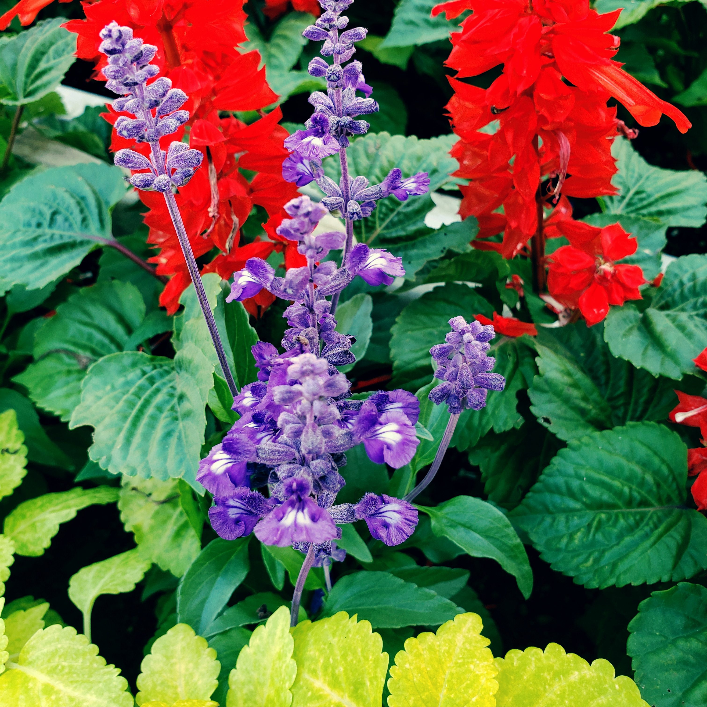

HOME
Beautiful Flowers...
This web site was opened for the Instagram acount,
"Beautiful Flowers @beautiflowersll".
Beautiful flowers in Miyazaki prefecture, Japan
are taken and shared. Now, around 2.5K followers
are supporting this acount. I hope this account
will grow more and more with your supports.

FLOWERS
Flowers...
Flowers shared on the acount are all grown at the warm places,
so they cannot be found at the cold places. Even in Japan,
some flowers shared here cannot grow. I guess some of you
have never seen these kinds of flowers before.


LOCATION
Location...
Japan is vertically long country located from 20° north
latitude to 46° north latitude. So, biodiversity in this
country is high. Miyazaki prefecture is located at 32°
north latitude, which has relatively warmer weather. This
condition foster kind of tropical flowers grow well, whose
colors are usually vivid and beautiful.

PHOTOS
Photos...
I am often asked by my followers how to take my photos
maybe because they are beautiful (I hope so lol).
I use my smartphone. Taking a bunch of photos gave me
some tips to take beautiful photos even if I use camera
on smartphone. If you would like to know them, give me
a direct message.

ABOUT ME
About me...
I am an university student in Japan. I was impressed by the beautifulness of flowers in the
prefecture, so I started to take and share them. In addition to that, I sell them via websites
being introduced on this websites to earn money for going to various places to take photos
and my tuition lol.